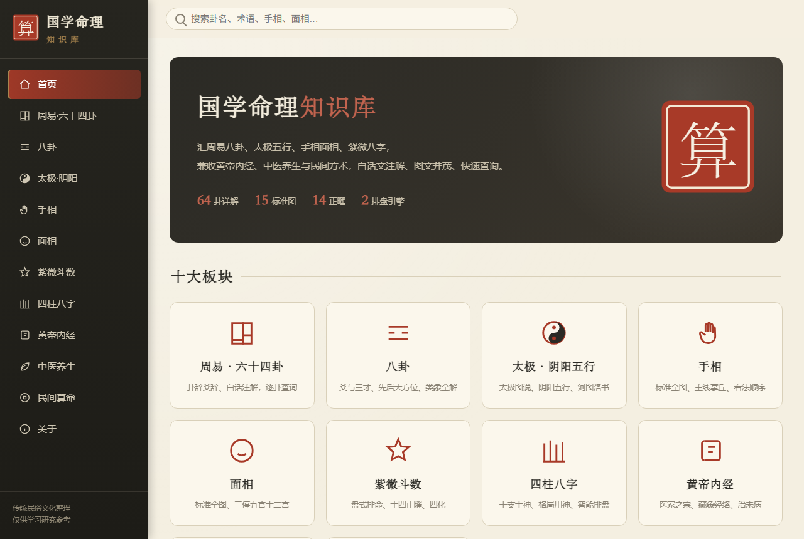
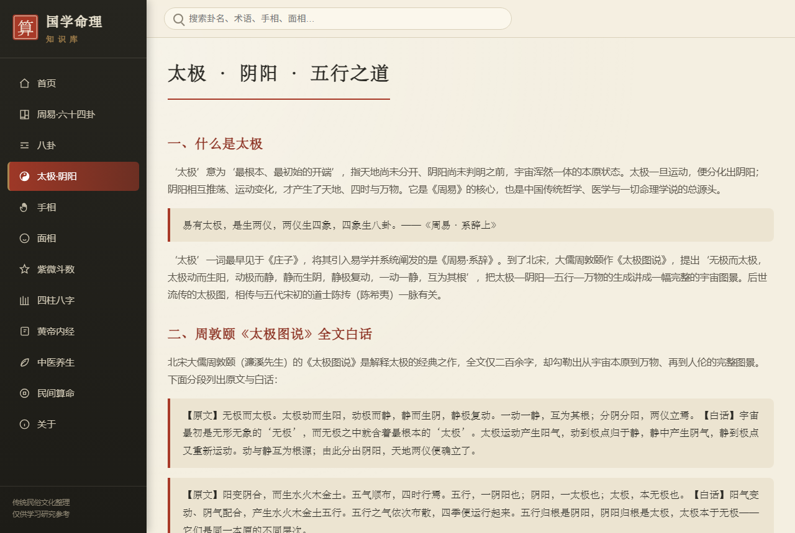
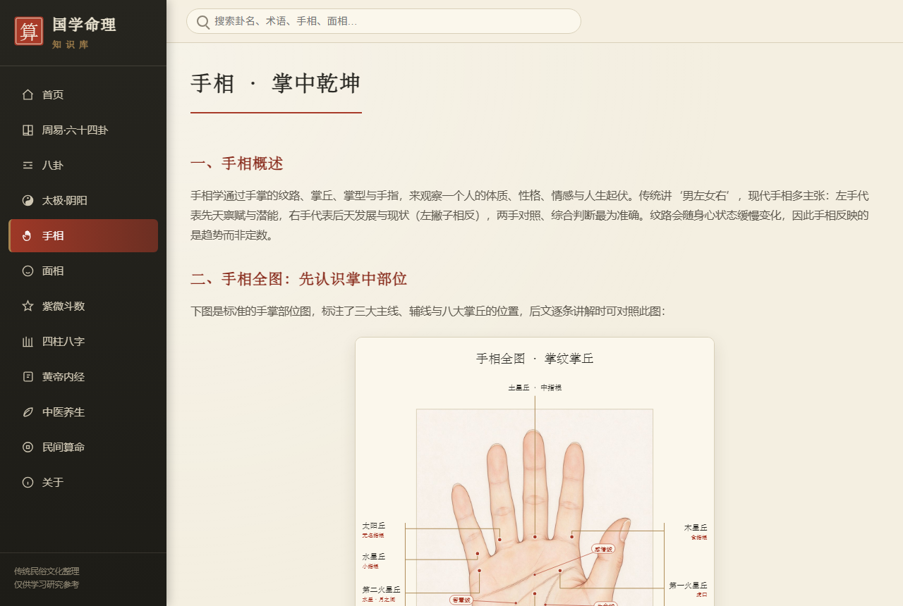
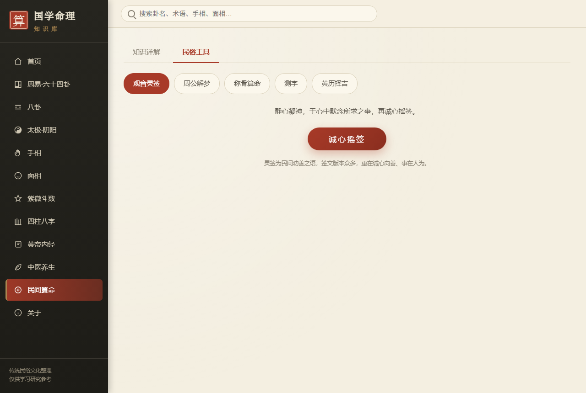

十大领域系统整理，每个板块都是一本白话注解的经典，支持快速检索
卦辞、《大象传》、六爻爻辞，逐爻白话、整卦大意与人生启示，卦画程序化生成。
三爻与三才、卦德卦符，先天/后天方位图，《梅花易数》万物类象详表。
《太极图说》白话、阴阳五行、河图洛书、生克之理与五行人格。
三大主线、命运线、八大掌丘，具象手掌中文标注教学图，看法顺序清晰。
三停、五官、十二宫，具象面部标注图，含《冰鉴》识人精要。
十四正曜、辅煞曜、四化、五行局，含本命盘智能排盘。
干支十神、纳音藏干、五行节气、大运流年，含智能排盘与分析实例。
医家之宗，藏象经络、六淫七情、四诊八法、治未病与篇章导读。
四季时辰、饮食情志、九种体质、二十四节气、八段锦与保健穴位。
观音灵签、周公解梦、称骨算命、测字、黄历择吉，五个工具可直接使用。
国风排版，图文清晰，宽表不溢出，配图一屏看全




三步即可上手，简单方便
下载 exe 后双击即可运行，无需安装、无需 Python，全程离线。
左侧导航或首页卡片选择板块；顶部搜索框可按卦名、术语快速检索。
紫微、八字切换到“排盘”输入出生时间起盘；民间算命提供五个实用工具。
软件内置更新器，在“关于 · 版本与更新”点击“检查更新”，即可联网查看新版本、阅读更新说明，一键下载并自动替换重启，无需重新手动下载。更新包由 GitHub Releases 安全托管。
关于运行、安全与内容说明
完全免费、无广告。所有知识库内容与排盘功能均离线可用；仅在“检查更新”时需要联网。
软件为 PyInstaller 打包的单文件程序，未做数字签名，个别杀毒软件可能误报。若 SmartScreen 提示“未知发布者”，点击“更多信息 → 仍要运行”即可；也可在 GitHub 查看发布说明自行判断。
八字、紫微、称骨、黄历均由成熟历法库（lunar_python）实时计算，干支、节气、农历换算精确。命理体系流派众多，结果作学习参考。
请将软件放在有写入权限的目录（如桌面、文档），不要放在 Program Files 等受保护目录；网络不通时软件会尝试本地代理，仍失败可到 GitHub Releases 手动下载最新版替换。
本软件为中国传统民俗文化的整理与白话注解，仅供学习、研究与参考，不构成任何人生决策建议。命理反映倾向而非定数，“相由心生、境随心转”，请理性看待、积极生活。